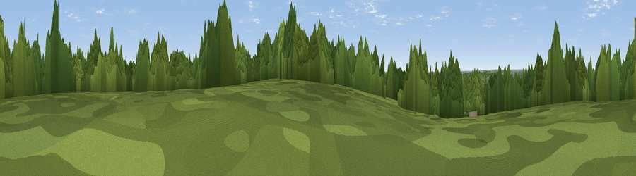

Viewpoint near South Oxhey
#33218 in England · top 29% of its area beats it · near South OxheyThe view, rendered

A 360° render of this exact spot computed from the terrain model, tree cover and land cover — summer colours, afternoon light, calibrated against photographs of famous viewpoints. Real trees, hedges and buildings will differ in detail.
The panorama
Grey silhouette: terrain skyline in each direction (720 bearings, Earth curvature and refraction included). Dashed green: skyline with trees (+15 m) and buildings (+8 m) as obstacles. Blue strip: how far the ground is visible on each bearing.
Where the view opens
Wedge length = distance to the farthest visible ground on that bearing (vegetation-aware). Rings at 10, 25 and 50 km.
What fills the view
53% woodland · 23% grassland · 22% built-up · 2% cropland ·
Angular shares of the visible panorama (visual magnitude), not map area. Landscape diversity 0.49 (0–1 Shannon).
Key numbers
More beautiful places nearby
The staircase of upgrades: each row has a higher view potential than everything closer. Driving times are estimates from straight-line distance, calibrated against real road routing — check an actual route before setting out.
| Place | Direction | Drive | Score |
|---|---|---|---|
| Viewpoint near South Oxhey | S · 1 km | ~2 min | 40.5 |
| Viewpoint near Harrow | ESE · 6 km | ~13 min | 44.6 |
| Wood Farm London Viewpoint | E · 7 km | ~14 min | 49.2 |
| Harrow on the Hill | SE · 7 km | ~15 min | 60.7 |
| Viewpoint near Tring Station | NW · 26 km | ~43 min | 68.5 |
| Viewpoint near Halton | NW · 28 km | ~44 min | 74.3 |
| Coombe Hill Monument | WNW · 29 km | ~46 min | 75.5 |
| Beacon Hill | WSW · 73 km | ~97 min | 76.7 |
51.62162, -0.40630 · source: screening · position refined by local search. Computed location — check access rights before visiting.